Chapter 1 · Batch 5 Private review · 7 generated candidates · owner visual approval pending
One alternate opaque room and six scene-aligned overlays. Approved room pixels are unchanged outside explicit masks. No production integration. Previews show proposed state selection, not a running gameplay implementation.
Production report · Gameplay PMO handoff · QA data · Exact prompts · Pixel-edit recipe
All-state contact sheet (native) · All-state contact sheet (4×)
Native 314×206 Exact 4× nearest-neighbor A · Album temporarily removed Canonical PNG · generated · RGB 314×206 · changed pixels: 837 · outside mask: 0
Original / neutral 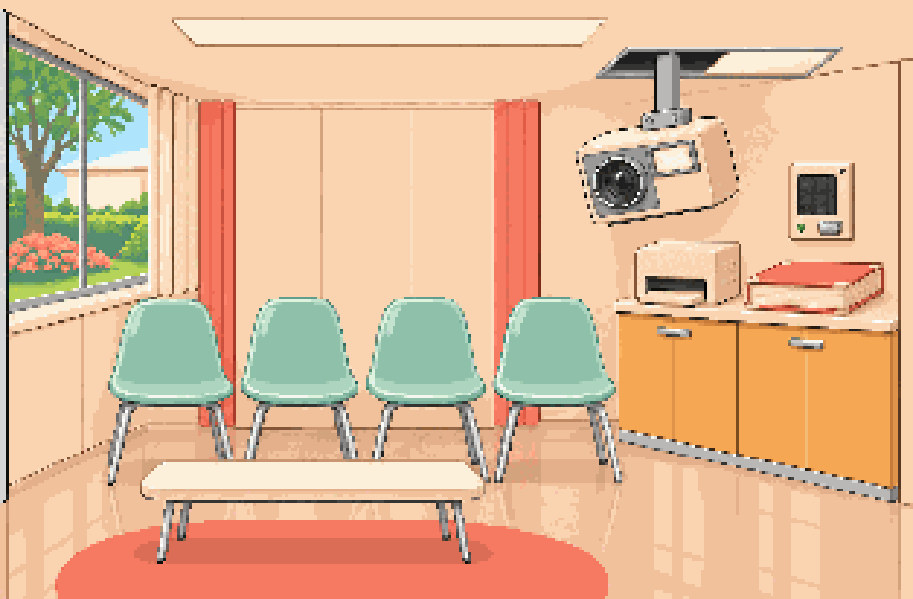
Proposed active state 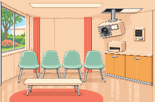
The main scene stays album-removed for every approved Focus A page. Closing restores the original above.
Focus A page 1 · original illustration and same main scene 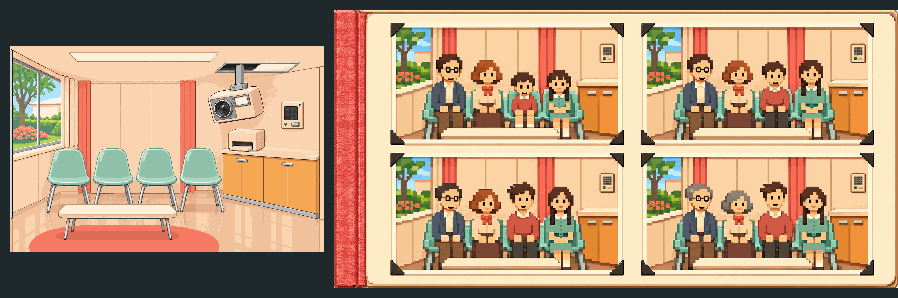
Focus A page 2 · original illustration and same main scene 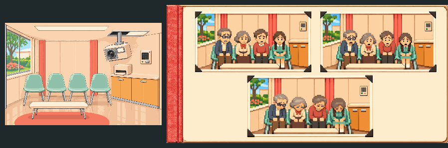
Focus A page 3 · original illustration and same main scene 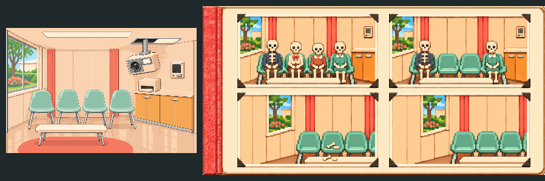
Pixel masks and removal proof Allowed affected footprint Actual binary pixel difference
B · Named plant adoption Canonical PNG · generated · RGBA 314×206 · changed pixels: 974 · outside mask: 0
Pixel masks and transparent overlay Allowed affected footprint 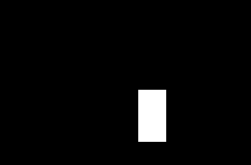
Actual binary pixel difference 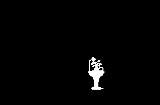
Canonical overlay on checkerboard 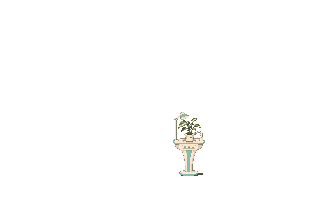
C · Stored desk plant Canonical PNG · generated · RGBA 314×206 · changed pixels: 310 · outside mask: 0
Original / neutral Proposed active state 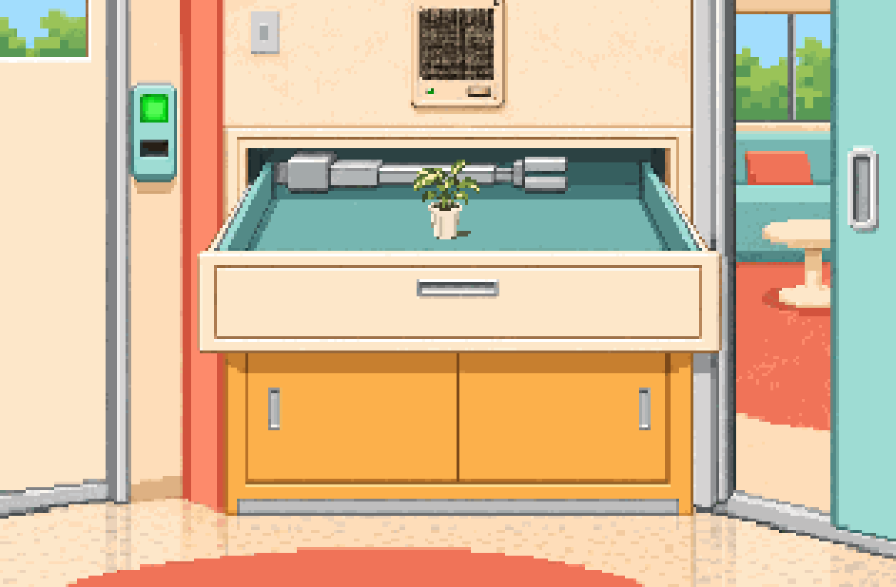
Pixel masks and transparent overlay Allowed affected footprint 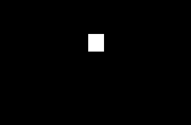
Actual binary pixel difference 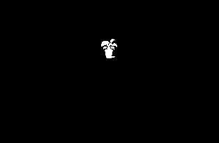
Canonical overlay on checkerboard 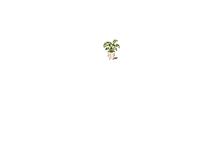
D · Stored red stapler Canonical PNG · generated · RGBA 314×206 · changed pixels: 332 · outside mask: 0
Original / neutral Proposed active state Pixel masks and transparent overlay Allowed affected footprint Actual binary pixel difference 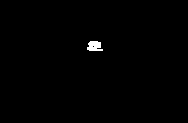
Canonical overlay on checkerboard 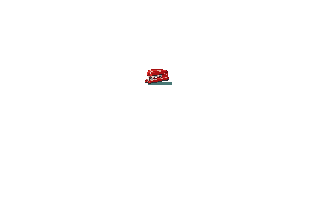
E · Stored rubber-band ball Canonical PNG · generated · RGBA 314×206 · changed pixels: 162 · outside mask: 0
Original / neutral Proposed active state Pixel masks and transparent overlay Allowed affected footprint 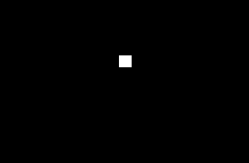
Actual binary pixel difference Canonical overlay on checkerboard 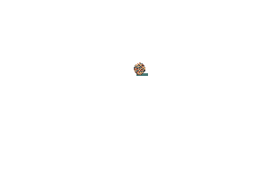
F · Stored timing clicker Canonical PNG · generated · RGBA 314×206 · changed pixels: 283 · outside mask: 0
Original / neutral Proposed active state Pixel masks and transparent overlay Allowed affected footprint 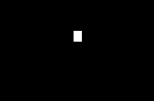
Actual binary pixel difference 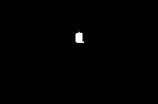
Canonical overlay on checkerboard 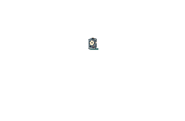
G · Equipment-registered RETURNS Canonical PNG · generated · RGBA 314×206 · changed pixels: 128 · outside mask: 0
Original / neutral 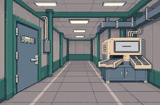
Proposed active state Pixel masks and transparent overlay Allowed affected footprint Actual binary pixel difference Canonical overlay on checkerboard
QA and preservation PASS: seven canonical outputs; RGB/RGBA dimensions; zero outside-region changes; binary overlay alpha; hidden RGB zero; exact 4× preview pixels; all 359 pre-existing PNGs unchanged.
Original artwork hashes · Source and reference hashes
Asset Actual changed bounds (half-open) Changed pixels A [253, 89, 307, 110] 837 B [173, 112, 205, 176] 974 C [145, 56, 168, 84] 310 D [145, 69, 172, 85] 332 E [150, 70, 166, 85] 162 F [150, 63, 167, 85] 283 G [232, 88, 266, 95] 128
Review assets only. Nothing published or promoted. Story and engine unchanged.